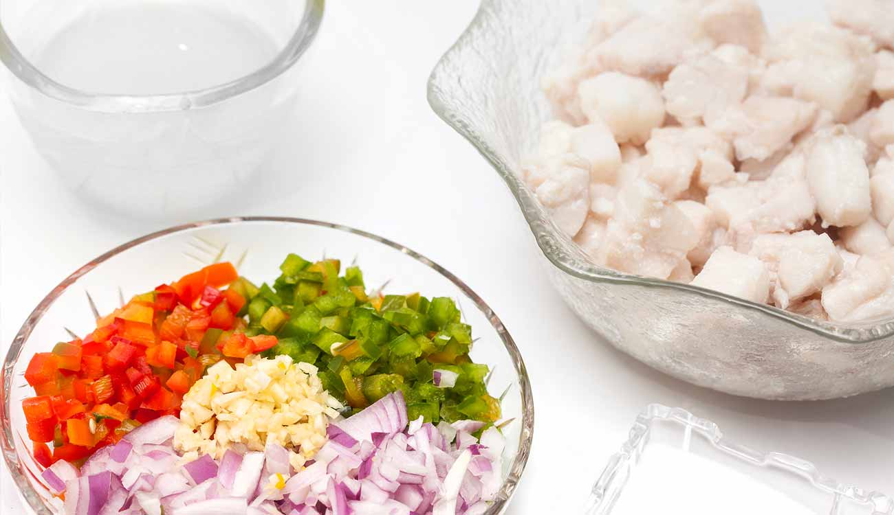

Step 1: Prepare Ingredients
Gather fresh yellowfin tuna, vinegar, onion, ginger, calamansi, salt, and pepper.
NextStep 2: Wash the Tuna

Combine tuna cubes with 3/4 cup vinegar. Let sit for 2 minutes, then drain while squeezing out excess vinegar.
Back NextStep 3: Mix Ingredients

Combine drained tuna with red onion, ginger, calamansi, salt, and pepper. Toss gently.
Back NextStep 4: Chill the Kinilaw

Cover and refrigerate for at least 30 minutes (no longer than 3 hours).
Back NextStep 5: Serve and Enjoy

Serve chilled and enjoy with a pairing of beer!
Back Restart